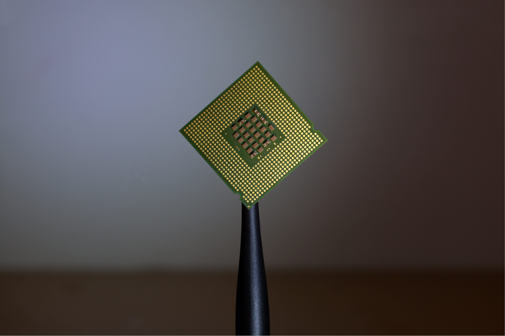
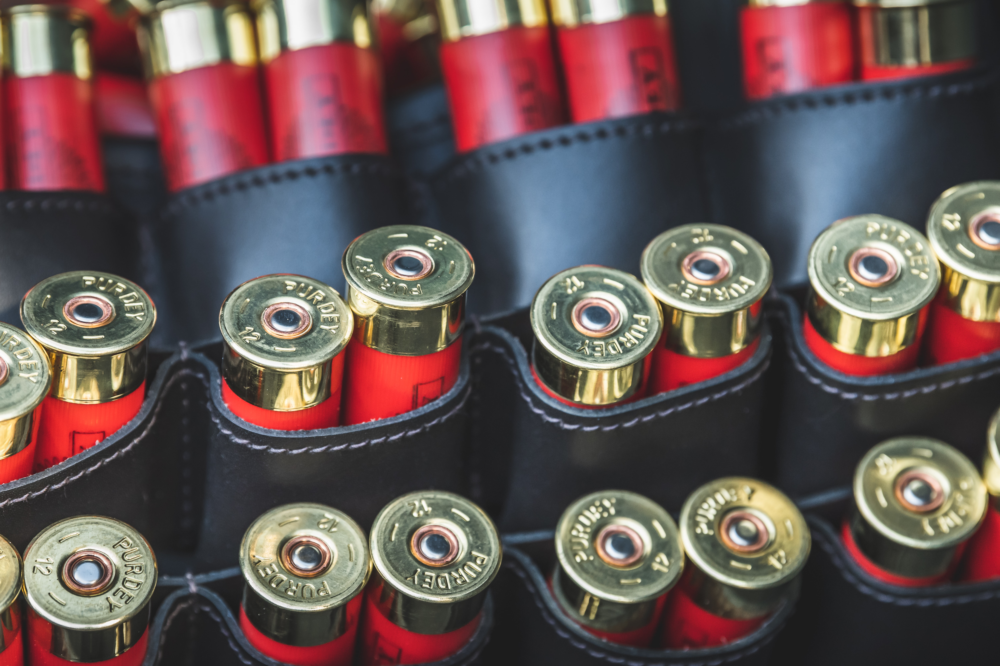

O projeto foi concebido pela FIAP e consiste no desenvolvimento e documentação de um robô para competir com outros robôs, a fim de integrar conhecimentos e técnicas de todas as disciplinas dos alunos do primeiro ano do curso de Sistemas de Informação
Nosso robô, O Taldo Destroça, é
muito mais que um robô feito para briga!
Ao vê-lo nas arenas
poderemos ver que por trás
do resultado final há meses de estudo em elétrica
básica e
digital tal como em programação aplicada
Tudo isso inserido dentro da tendência mundial de robótica educacional!
Galeria
Especificações
O robô é composto por três principais partes:
Estrutura e HArdware
Nosso Robo foi construido em uma base de
mdf de 25cmx25cm,
com paredes
triangulares medindo
10cm
x
23cm x
25cm. Ele é movido por dois motores de 5v/150rpm cada, com caixa de redução embutida.
O
"cerebro"
do
taldo
destroça é um arduino uno, acoplado a ele um shild de motores com capacidade de controlar
ate 4
motores.
O
robô é controlado por um smartphone via bluetooth, atráves
de um módulo bluetooth hc 06.
Para
alimentar todo este monstrinho necessita de 6 pilhas AA de
1.5v cada.

Arma
A arma é composta por:
Um
motor
dc 5v/330rpm o qual possui um palito com uma bola cheia de agulhas na ponta pronto para
estourar
os
balões
dos adversários!


Robocup:
A Robocup é a competição mais antiga da FIAP. Alunos dos 1°s anos de Sistemas de Informação
constroem robôs para participar de duelos, onde o principal objetivo é estourar o balão que o
adversário carrega. Para isso, todas as máquinas possuem armas em seu corpo.
A competição
também exige o funcionamento pleno do robô.
Após estourar o balão do oponente, ele deve recolher
sua arma, só assim é considerado o vencedor.
Next:
O NEXT é o Festival de Tecnologia e Inovação que reuniu, no ano de 2017, mais de dois mil jovens talentos da FIAP apresentando suas melhores criações: drones, robôs, conteúdos para VR devices, aplicativos mobiles e muito mais. O evento citado acima foi realizado em 21/10/2017 na Casa das Caldeiras.

Equipe Destroça
.accordion-body, though the transition does limit overflow.
.accordion-body, though the transition does limit overflow.
.accordion-body, though the transition does limit overflow.
.accordion-body, though the transition does limit overflow.
.accordion-body, though the transition does limit overflow.